Análise de Dados Comerciais
Este relatório apresenta as principais análises realizadas a partir da base corrigida de oportunidades comerciais.
As análises consideram apenas os tipos de oportunidade dentro do escopo definido no case.
1. Receita Closed Won MoM

A receita Closed Won apresenta concentração em determinados meses de 2026, indicando picos de fechamento ao longo do período analisado.
2. Participação por Lead Source
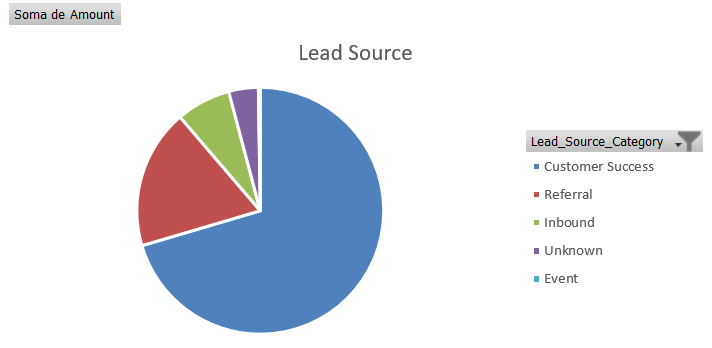
Customer Success concentra a maior participação da receita, indicando forte relevância de oportunidades originadas de clientes existentes.
3. Top 10 Oportunidades em Aberto
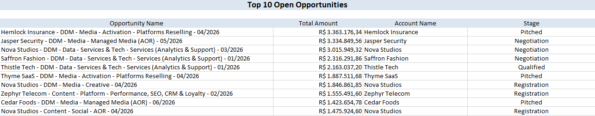
As maiores oportunidades abertas estão concentradas em poucos clientes, indicando oportunidades relevantes em negociação e possível concentração do pipeline.
4. Win Rate por Lead Source
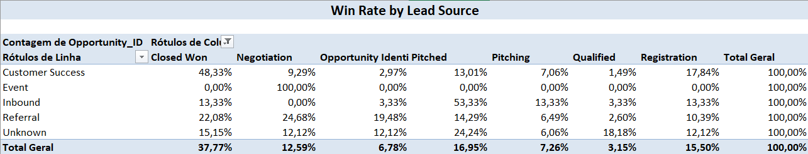
O win rate varia entre as categorias de Lead Source, mostrando diferenças na qualidade e conversão das oportunidades por origem.
5. Ticket Médio por Type
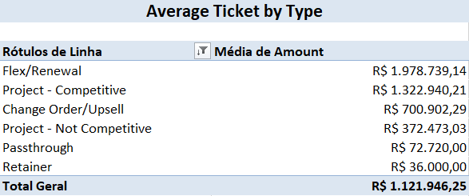
O ticket médio varia entre os tipos de oportunidade, evidenciando diferenças entre novos negócios e oportunidades de expansão.
6. Pipeline em Aberto por Stage
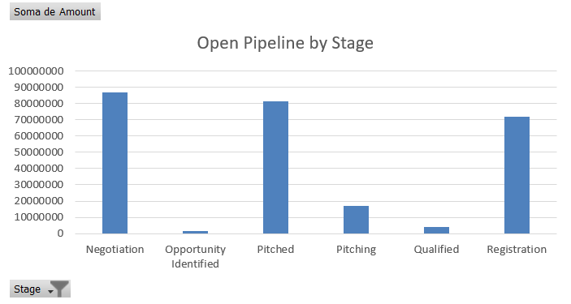
O pipeline aberto apresenta maior concentração de valor em estágios intermediários, indicando onde estão as principais oportunidades em negociação.
7. Mix New Business vs Upsell
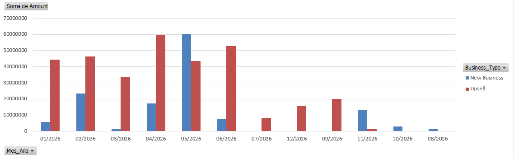
A análise mostra a participação de New Business e Upsell ao longo do tempo, permitindo avaliar o equilíbrio entre aquisição de novos clientes e expansão da base existente.
8. Ciclo de Venda Médio por Lead Office
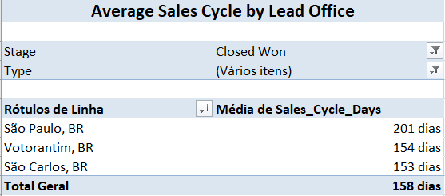
São Paulo apresenta o maior ciclo médio de vendas, indicando processos mais longos em comparação com São Carlos e Votorantim.
9. Top 10 Clientes Closed Won YTD
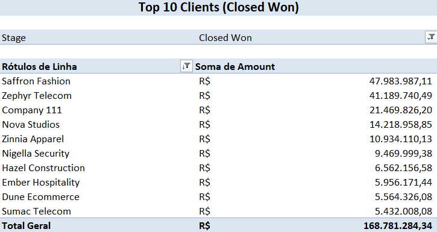
A receita fechada em 2026 está concentrada em poucos clientes estratégicos, o que pode representar tanto oportunidade quanto risco de concentração.
10. Idade do Pipeline Aberto
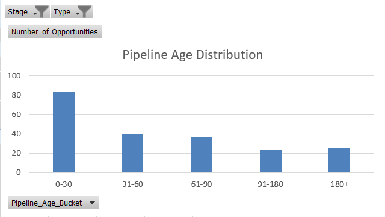
A maior parte das oportunidades abertas está concentrada na faixa de 0 a 30 dias, mas ainda existem oportunidades com mais de 180 dias em aberto, indicando possíveis gargalos.
Análise Complementar: Ticket Médio Closed Won
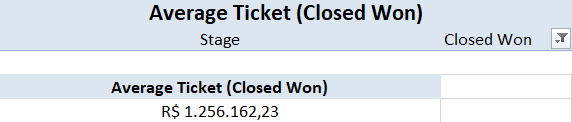
O ticket médio das oportunidades Closed Won resume o valor médio gerado por negócio fechado.
Análise Complementar: Métricas do Pipeline
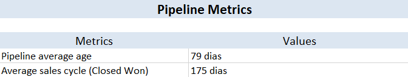
As métricas consolidadas ajudam a resumir a idade média do pipeline e o ciclo médio de vendas.
Análise Complementar: Distribuição por Stage

A distribuição por Stage mostra como as oportunidades estão espalhadas ao longo do funil comercial.
Conclusão
A análise indica concentração relevante de receita em alguns clientes e canais, além de oportunidades de melhoria no acompanhamento do pipeline, no controle de qualidade dos dados e na evolução das oportunidades entre os estágios do funil.